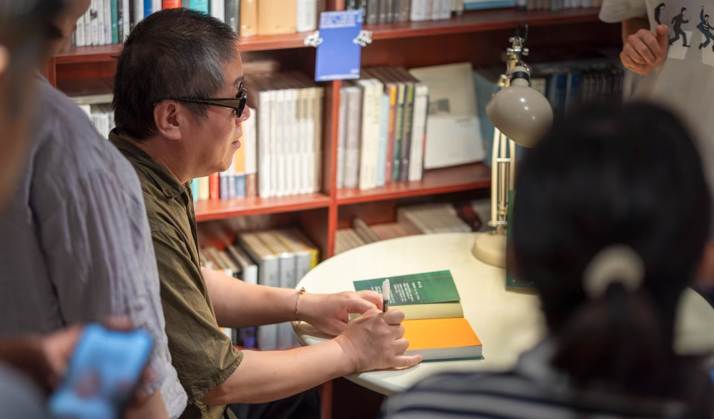

文化内容体系
通过策展、出版与系列活动，持续产出高质量文化内容。
策展与出版计划
-
●
"镜中东北"年度书单： 聚焦东北作家、摄影师与地方叙事，构建权威性文化索引。
-
●
地方出版合作： 与本地出版社联合策划选题，深度挖掘工业记忆、城市人文等主题。
-
●
东北影像志： 收集整理东北地区的历史影像与当代摄影作品，建立视觉档案库。
核心文化活动
「镜像读书会」
以东北文学为主题的系列共读活动，每月一期，深度解读东北作家作品。
「镜城沙龙」
邀请作家、学者探讨"地方性与现代性"，关注城市变迁与文化认同。
「冬夜诗会」
以音乐与诗歌温暖沈阳的漫长冬季，营造温馨的文化交流氛围。

图片来源：打盹儿书店周云蓬分享活动